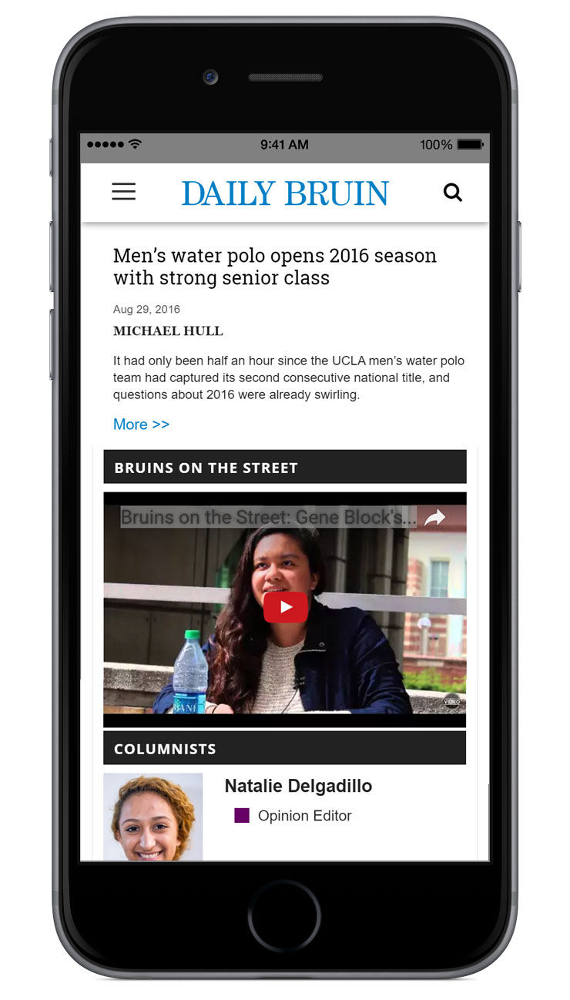

<div class="content">
    <div id="daily-bruin" class="project">
        <p class="p-nav prev"><a class="change-page prev" href="/stashd">&#8592; prev</a><a class="change-page next" href="/acs">next &#8594;</a></p>
        <h3>Daily Bruin Projects</h3>
        <ul class="skills-list top">
            <li>HTML</li>
            <li>CSS</li>
            <li>JavaScript</li>
            <li>JQuery</li>
            <li>PHP</li>
            <li>JSON</li>
            <li>WordPress</li>
            <li>Bootstrap</li>
        </ul>
        <div class="p-gallery">
            
            
            
            
        </div>
        <ul class="skills-list bottom">
            <li>HTML</li>
            <li>CSS</li>
            <li>JavaScript</li>
            <li>JQuery</li>
            <li>PHP</li>
            <li>JSON</li>
            <li>WordPress</li>
            <li>Bootstrap</li>
        </ul>
        <div class="p-details">
            <p class="p-description">The Daily Bruin is the student newspaper of UCLA. During my time as a member of the Daily Bruin Online department I developed several web pages including: <br><br>1. Tiled list of Daily Bruin Online Features built with the Masonry Cascading Grid Layout. List items are pulled from a JSON list using JavaScript/JQuery. List can be dynamically filtered by category or year. 
            <a class="live-site" href="http://dailybruin.com/features/" target="_blank" rel="noopener noreferrer">View Live Site &Gt;</a>
            <br>
            2. Blog styled opinion column page incorporated into existing WordPress framework with color coded headers to distinguish coloumn subject matter.</p>
        </div>
        <p class="p-nav prev"><a class="change-page prev" href="/stashd">&#8592; prev</a><a class="change-page next" href="/acs">next &#8594;</a></p>
    </div>
</div>